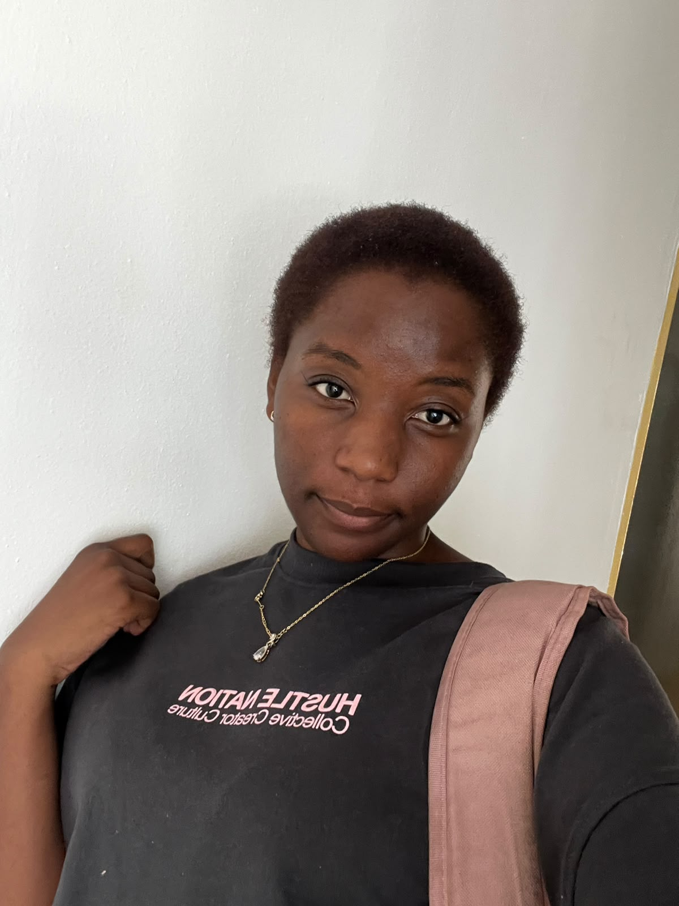

Personal Portfolio
A website where I share my work, skills and progress as a developer.
HTML, CSS, JavaScript
Final-year software development student
I work with C#, .NET, Java and SQL, and I'm looking for an opportunity to gain practical experience and keep learning.

-- about_me.sql
SELECT name, role, skills
FROM unarine;name | Unarine Phasha
role | Software dev student
skills | C#, .NET, Java, SQLI'm completing my studies in software development, with a strong focus on back-end work: building applications in C# and .NET or Java, and designing and querying the databases behind them.
I love learning, and I learn fast. I make mistakes like everyone, but I always learn from them. The errors I've run into while coding have made me a better programmer today.
In 2026 I led the South African Sign Language (SASL) club, where I taught other students to sign. I learned SASL myself in about three months. I'm bubbly and welcoming, I communicate easily with people, and I'm comfortable leading.
Outside of coding, I enjoy:
Tools and technologies I've worked with.
A few projects that show what I've been learning.
A website where I share my work, skills and progress as a developer.
HTML, CSS, JavaScript
A dashboard for tracking assignments and calculating the marks needed to reach a target grade.
Assignment tracker, grade calculator